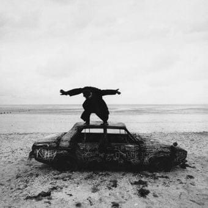

I know a place
It's somewhere I go when I need to remember your face
We get married in our heads
Something to do while we try to recall how we met
[Chorus: Matty Healy]
Do you think I have forgotten?
Do you think I have forgotten?
Do you think I have forgotten
About you?
[Verse 2: Matty Healy, Carly Holt]
You and I (Don't let go)
We're alive (Don't let go)
With nothing to do, I could lay and just look in your eyes
Wait (Don't let go)
And pretend (Don't let go, oh)
Hold on and hope that we'll find our way back in the end (In the end)
[Chorus: Matty Healy]
Do you think I havе forgotten?
Do you think I have forgotten?
Do you think I havе forgotten
About you?
Do you think I have forgotten?
Do you think I have forgotten?
Do you think I have forgotten
About you?